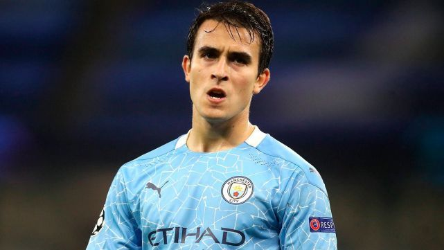

Eric Garcia
El joven defensa del Manchester City Eric García habría aceptado sacrificar parte de los ingresos que le garantizaba la anterior directiva del FC Barcelona con tal de poder cumplir su sueño de regresar al Barça, el club del que salió en 2017. Por Tanto, la operación asumida por el actual mandamás de la entidad catalana, Joan Laporta, estaría en "su recta final", según lo avanzado por varios medios deportivos en España, específicamente en la Ciudad Condal.
